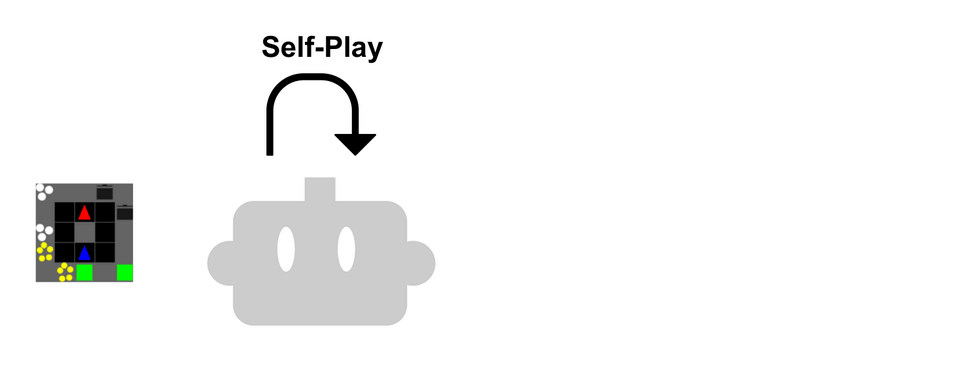
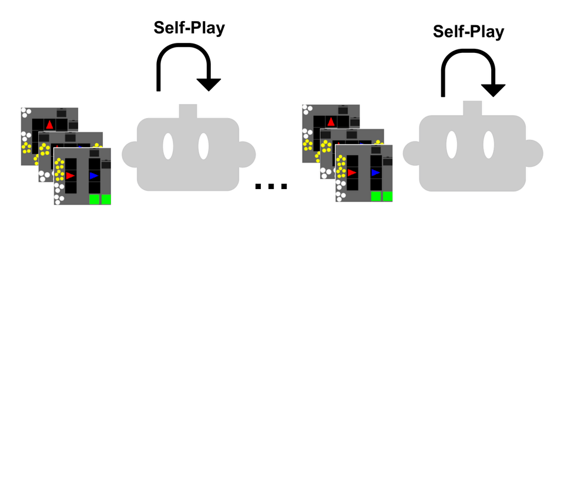
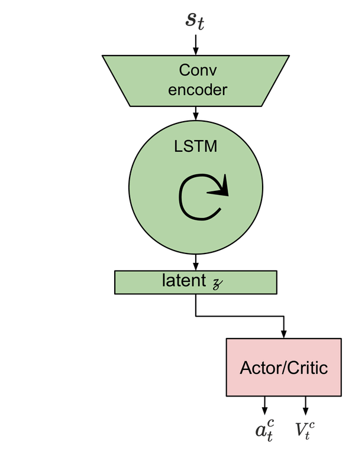
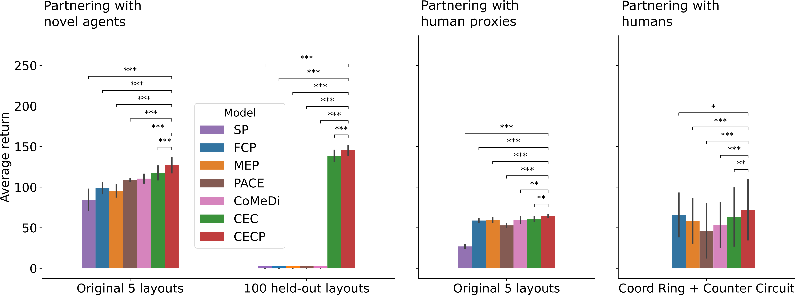
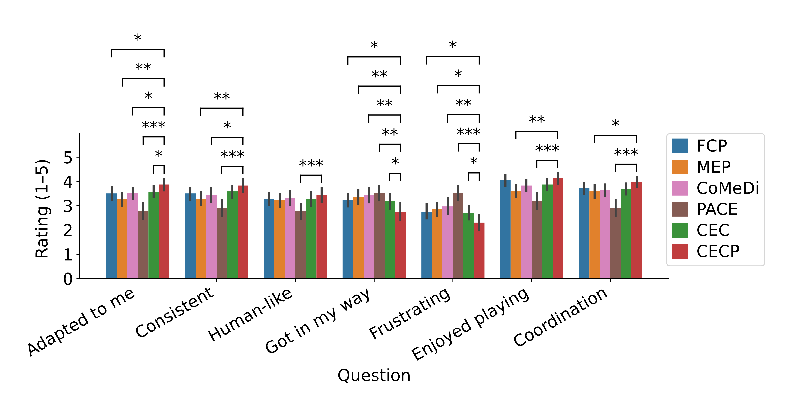
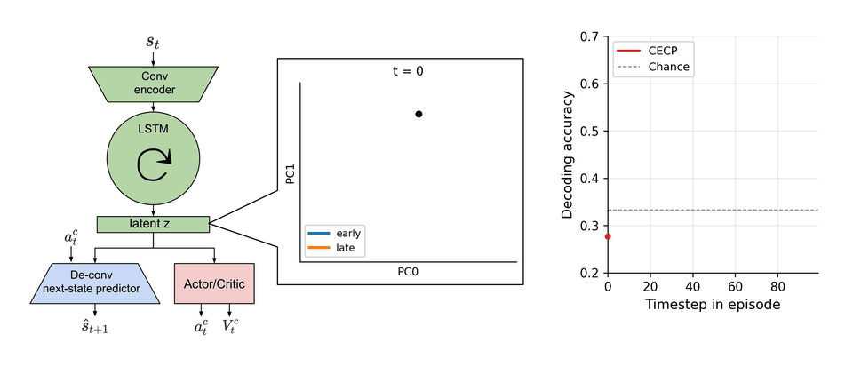
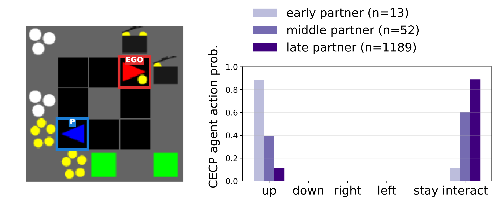

Cross Environment Co-Play (CECP) trains agents to cooperate with novel
partners, in novel environments.
AI deployed in the real world has to coordinate with people it has never met, in settings it
has never seen. Although hundreds of papers have been written on cooperating with novel partners,
these almost all focus on training a new policy for each new environment. Training a single self-play agent
across procedurally generated environments improves generalization to both new layouts and new partners, but never
exposes the agent to a diverse set of partners. CECP combines both kinds of diversity.
Training Method
Step 1: Train a population of self-play agents, each across a
distribution of procedurally generated environments.

Step 2: Train a cooperator against this frozen population, again
across a distribution of environments.

Cooperator Architecture
The cooperator encodes each observation with a convolutional encoder and an LSTM into a
latent z, which feeds an actor-critic head.
CECP adds a de-convolutional next-state predictor that takes z and
the cooperator's own action and predicts the next state. The next state depends on both what
the partner does and the layout, so this auxiliary objective pushes z to encode
partner behavior and task structure together.

Results in Overcooked
Coordinating with novel partners in novel environments
We compare CECP against six baselines: SP, FCP, MEP, PACE, CoMeDi and CEC. All of the
baselines except CEC train on one layout at a time. CEC and CECP train on procedurally
generated layouts, and never see the five classic Overcooked layouts during training.
Across novel agents, behavior-cloned human proxies, and real people, CECP outperforms the other
baselines.

Average return in each partner setting. Brackets compare CECP with each baseline
(* p < 0.05, ** p < 0.01, *** p < 0.001); error bars show the standard deviation.
Humans prefer partnering with CECP
After playing, participants rated each partner on a 1–5 scale. They rated CECP as the
partner that best adapted to them, and as the least frustrating and the least in their way.
Lower is better for “Got in my way” and “Frustrating”.

Post-game survey ratings. Brackets compare CECP with each baseline
(* p < 0.05, ** p < 0.01, *** p < 0.001).
Example games with human participants
In each game, the human participant is red and the CECP agent is blue.
Coordination Ring: the human participant switches between clockwise and
counter-clockwise movement patterns, so the CECP agent adjusts its movement to avoid
collisions.
Counter Circuit: when the pot is ready, the CECP agent initially grabs a
plate to collect the soup, but when it sees the human participant also grab a plate, it adapts,
and sets the plate down to grab another onion instead.
CECP infers partner skill level
Does CECP actually model who it is playing with? We pair a CECP cooperator with partner
agents saved early, midway and late in their training, as a stand-in for unskilled and skilled
players, and track its latent z over each episode.
Middle:z projected onto its first two principal components. Each
thin line is one episode, and the thick lines average over episodes with early (blue) and
late (orange) partners. The trajectories start together and pull apart as the episode
unfolds.
Right: a linear decoder trained on z recovers the partner's training
stage (early, mid or late) above chance level, and gets more accurate the longer
CECP plays with that partner.

Adapting to partner skill
Does CECP actually use this inference of partner skill level to adapt its behavior? We find
example states in Overcooked where the CECP cooperator's action distribution differs based off of the
partner's skill level.

When the partner is early in training, or unskilled, CECP prefers to head upward to finish
the other pot, so at least one soup gets cooked.
When the partner is late in training, or skilled, CECP prefers to drop its onion in the
rightward pot, expecting help from the partner to fill that pot up with another onion.
Conclusion
Combining partner and environment diversity with next-state prediction creates agents that
generalize to new partners in new environments, coordinate better with real people, and
represent their partner's skill.